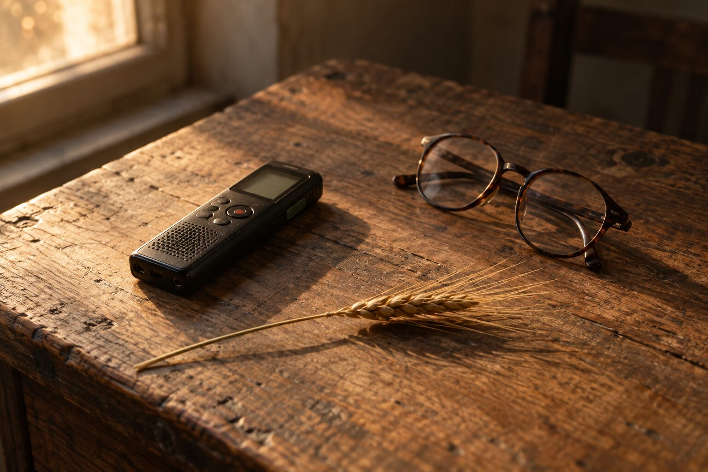
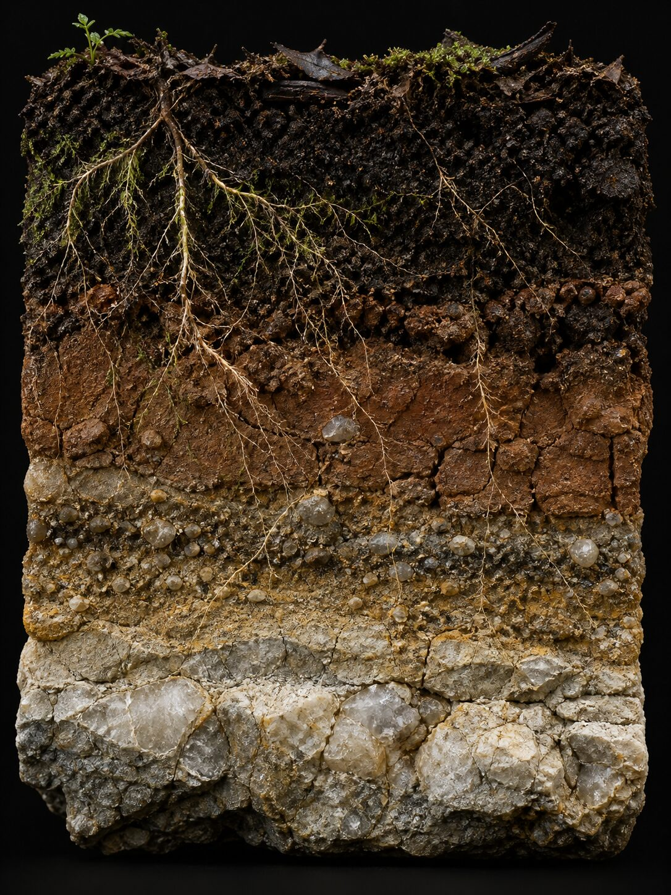
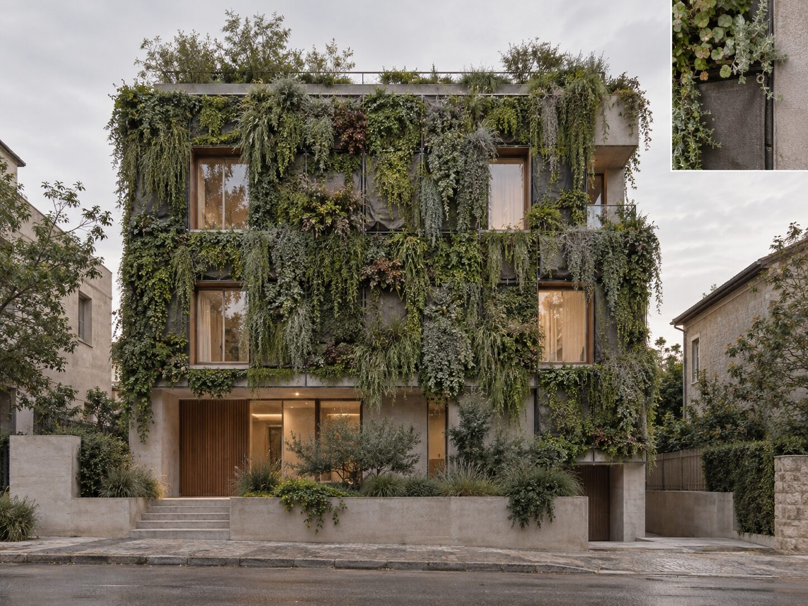

01
表土 0–15cm
領域一 · 半導體材料革命生物煉金術：常溫提純的去碳化製程
現代微電子工業的基礎是高純度矽晶圓，而傳統提煉必須在高溫電弧爐中進行，耗能極大、碳排沈重。白皮書提出的核心，是一項「微生物菌專利技術」：讓無機矽礦在常溫環境下，經微生物分解與吞噬轉化為有機矽。
AI 秘書在此扮演樞紐：即時環境監控與數據動態優化，確保生化反應槽內的溫度、濕度與菌株活性，維持在巔峰穩定狀態。
- 純度 99.999999%（9N）
- 符合奈米級矽晶圓規格
- 重工業去碳化
戰略白皮書 ｜ 跨界賦能與商業重構
從媒體到使命的跨界行者。一位訪問過無數董事長的財經記者，最後把麥克風轉向了土地——這一次，他要問的不是財報，是價值觀、呼召，與生命的抉擇。
向下探勘
農業早已不是看天吃飯的悲情產業，而是未來生物經濟、ESG 金融與人道科技的交會樞紐。
這句話出自一份戰略白皮書的結語。寫下它的人，不是農學博士，也不是創投合夥人——他是一位在財經新聞現場待了二十多年的記者。

那個人
才榮數位 總經理｜AI 商業模式 共同創辦人
AI 傳道學院 創辦人｜AI 媒體聯盟 總編輯
屏東出身，高雄中學、中國文化大學法律系，後於文化大學大陸問題研究所取得法學碩士。他的職涯從《工商時報》大陸新聞中心的記者開始，經歷《管理雜誌》，再到東森聯播網《BossClub 老闆俱樂部》的主持台。
二十多年來，他坐在無數位董事長與中小企業主對面。聽的是策略、資本、擴張與轉型，看的卻是企業的興衰、領導者的抉擇，以及那些沒有被寫進財報裡的人性掙扎。
先求神的國與神的義。——他個人頁面上唯一的一句自我介紹
財經新聞第一線，長期追蹤兩岸產業與企業動態。法學訓練成為他讀懂法規與制度的底子。
從報導事件轉向解構經營，深入企業的組織、決策與領導課題。
把董事長請進錄音室。上千小時的對話，累積成一座關於台灣中小企業的口述檔案庫。
將採訪功力結合 AI 技術，投入 AI 錄音、逐字稿、內容組織與決策分析——把零散的對話，轉化為可被理解、記錄與傳承的智慧資產。
成為一座橋樑，連結企業、教會、創業者與跨文化行動者，讓科技成為承載使命、記錄見證、傳遞異象的器皿。
轉折
在媒體生涯裡，他逐漸意識到：真正影響企業與社會的，不只是策略與資本，而是價值觀、呼召與生命抉擇。
技術可以被複製，資本可以被募集，商業模式可以被抄襲。唯一無法外包的，是一家企業究竟相信什麼。
於是他把問題帶回了最古老的產業——農業。那是一個被長期定義為勞力密集、低利潤、看天吃飯的地方，也是一個最直接觸及土地、糧食與生命本質的地方。
當生物科技深度演進，遇上 AI 的全面賦能，他相信農業正在經歷一場歷史性的跨界升維：它不再只是種出食物，而是同時鏈接半導體材料、奢侈品防偽、綠色建築與資產增值——並且，可以在一套正確的價值框架下運行。
四大跨界支柱
這份白皮書像一支取自田間的土壤剖面樣本：從最靠近地表、最快能落地的商業層，一路往下，直到那層決定一切的思想基岩。愈往下，愈不容易被複製。

表土 0–15cm
現代微電子工業的基礎是高純度矽晶圓，而傳統提煉必須在高溫電弧爐中進行，耗能極大、碳排沈重。白皮書提出的核心，是一項「微生物菌專利技術」：讓無機矽礦在常溫環境下，經微生物分解與吞噬轉化為有機矽。
AI 秘書在此扮演樞紐：即時環境監控與數據動態優化，確保生化反應槽內的溫度、濕度與菌株活性，維持在巔峰穩定狀態。
心土 15–60cm
RFID、QR Code 與數位防偽標籤，都面臨被竄改、複製或撕毀的風險。這套方案改為將農研實驗室等級的生物訊息序列，物理性嵌入高級寶石、貴金屬或頂級皮件之中，並由 AI 秘書建立與維護專屬的「生物加密分類帳」。
「科學家就把那一隻蚊子的血拿出來，然後就複製成恐龍了⋯⋯我們是用這個農業技術。」
由於生物特徵序列的排列組合具備天文數字級的唯一性，仿冒品在生化與光譜檢驗下無所遁形。
風化層 60–120cm
在不動產開發中，ESG 與綠建築認證常被建商視為「被動的環保成本負擔」。迪化街布商投入十七年研發的機能布，具備取代土壤的五大功能——保水、保濕、保氣、保肥、透氣——包覆外牆與屋頂，讓整座大樓像一棵會呼吸的大樹。
AI 秘書在此是法規與數據精算師：自動計算建築微氣候、灌溉循環、綠化率，以及法規容積獎勵的申請門檻，確保在 100% 合規前提下實現容積收益最大化。
基岩 120cm+
若沒有思想架構的約束，技術將失去方向。白皮書主張以聖經原則——道、真理、生命——作為 AI 系統與整條跨界生態鏈的思想標竿，並把這套價值觀直接寫進底層代碼。
在 AI 時代，擁有「正確的靈魂」比擁有強大的技術更為重要。
案例解構
同一棟樓，換一種材料與一套法規邏輯，帳就完全不一樣了。以下為白皮書中的關鍵維度對照。

| 關鍵維度 | 傳統建築綠化困境 | 跨界農業布料創新解方 |
|---|---|---|
| 結構承重與土壤 | 天然土壤重量大、易流失、堵塞管線、滋生蚊蟲 | 十七年專利布料具備保水、保濕、保氣、保肥、透氣五大功能，輕量化極致 |
| 施工與維護 | 外牆立面難以大規模覆土，維護費用高昂 | 模組化布料包覆外牆與屋頂，施工與維護大幅簡化 |
| 法規獲利轉化 | 僅獲得榮譽性標章，無法直接換算現金流 | 精準符合都更／綠建築標準，合法爭取額外 10% 容積獎勵 |
| 商業收益量化 | 成本增加 5%～10% | 以萬坪建案為例，合法增加 1,000 坪銷售面積，創造數億元商業增值 |
軟體協定
這不是行銷口號，而是寫進 AI 核心底層指令碼的生產標準。任何合作、任何產出，都必須通過這三項檢核。
堅持生態淨化，無有害物質殘存。不以「符合法規上限」為終點，而以土地能否長久承載為標準。
尊重自然物種的原初創造與秩序。技術用來還原與守護，而不是重寫生命本身的設計。
回歸大地造物設計，提供完整的生命滋養。作物不只被種出來，而是真正餵養人。
落地路徑
願景要大，但第一步要能真正動起來。這是白皮書建議的三階段推進戰略。
率先鎖定都市更新案、品牌建商、代銷團隊與建築師事務所，迅速完成指標建案展示。
對接高單價農產與高端珠寶奢侈品品牌，建立不可複製的溯源標籤。
針對半導體級常溫微生物製程，走長線專利授權與綠色技術扶植路徑。
參與這個計畫
這個計畫要連結的，是企業、教會、創業者與跨文化行動者。如果你在其中任何一端，這裡有你的位置。
手上有都更案或新建案，想同時解決 ESG 評級與容積效益。我們提供材料、法規與 AI 精算的整合提案。
深受仿冒與溯源之苦，需要一套無法被複製的鑑價與防偽基礎建設。
對常溫微生物製程與綠色材料有興趣，願意參與第三方驗證、專利授權或天使投資。
相信技術該承載使命。想把生命故事、見證與異象，用 AI 記錄、組織並傳承下去。